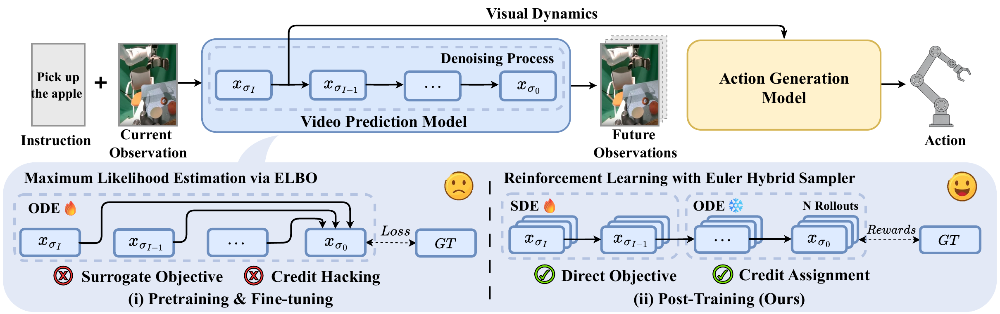
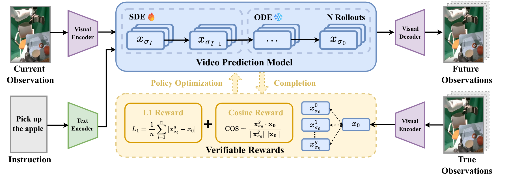
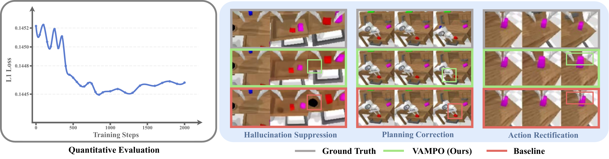
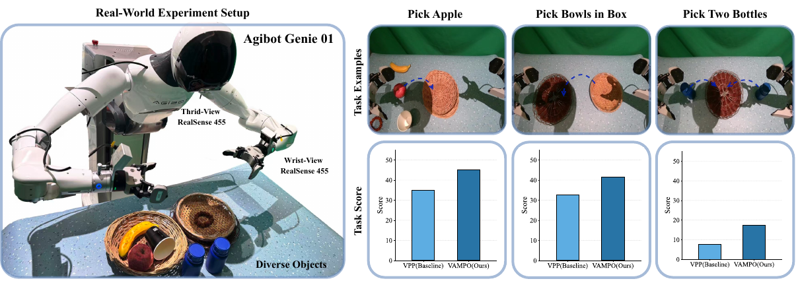

VAMPO: Policy Optimization for Improving
Visual Dynamics in Video Action Models
Why VAMPO?
VAMPO directly improves precision-critical visual dynamics in video action models by replacing likelihood-only post-training with reward-based policy optimization. With an Euler Hybrid sampler, GRPO, and verifiable latent-space rewards, it improves downstream action generation across CALVIN, L-CALVIN, and real-world manipulation benchmarks—without architectural modifications.
Abstract
Video action models are an appealing foundation for Vision–Language–Action systems because they can learn visual dynamics from large-scale video data and transfer this knowledge to downstream robot control. Yet current diffusion-based video predictors are trained with likelihood-surrogate objectives, which encourage globally plausible predictions without explicitly optimizing the precision-critical visual dynamics needed for manipulation. This objective mismatch often leads to subtle errors in object pose, spatial relations, and contact timing that can be amplified by downstream policies.
We propose VAMPO, a post-training framework that directly improves visual dynamics in video action models through policy optimization. We formulate multi-step denoising as a sequential decision process and optimize the denoising policy with rewards defined over expert visual dynamics in latent space. To make optimization practical, VAMPO introduces an Euler Hybrid sampler that injects stochasticity only at the first denoising step, enabling tractable low-variance policy-gradient estimation while preserving the coherence of the remaining denoising trajectory. Combined with GRPO and a verifiable non-adversarial reward, VAMPO improves task-relevant visual dynamics, leading to better downstream action generation and stronger generalization in both simulation and the real world.

Figure 1. Overall of VAMPO. Our post-training framework introduces reinforcement learning from verified rewards in place of the surrogate objective in video action models, enabling direct optimization of task-specific goals in training video prediction model (VPM). This approach improves the accuracy of VPM’s predictive visual representations, leading to enhanced action generation and task performance. Notably, the method demonstrates significant improvements not only in simulated environments but also in real-world scenarios.
Method

Figure 2. Overview of the VAMPO training paradigm. In the pretraining stage, the video prediction model (VPM) and action generation model (AGM) are trained on expert demonstrations. In the policy optimization stage, the VPM generates future latents via a hybrid denoising process, using SDE-style stochasticity only at the first step and ODE-based denoising for the remaining steps. Verified rewards are computed by comparing predicted latents with expert latents, and GRPO is used to optimize the VPM toward more precise, control-relevant visual dynamics for downstream action generation.
VAMPO revisits the latent-level video action modeling paradigm, where a video prediction model (VPM) predicts future visual representations conditioned on the current observation and instruction, and an action generation model (AGM) maps these predictive features to executable actions.
The key idea is to cast multi-step denoising as a sequential decision process. Each denoising step is viewed as an action taken by a denoising policy, and the final predicted latent receives a terminal reward according to how well it matches the corresponding expert future latent in the same representation space.
To make reinforcement learning practical, VAMPO uses an Euler Hybrid sampler: only the first denoising step is stochastic with Euler-Ancestral sampling, while the remaining steps stay deterministic with Euler-Discrete updates. This reduces variance, alleviates credit assignment difficulty, preserves temporal coherence, and focuses optimization on the early representation most relevant for downstream policy learning.
The optimization objective combines L1 distance and cosine similarity in latent space as a verifiable reward, and applies GRPO with group-normalized advantages to align generated visual dynamics with expert dynamics.
Questions & Key Findings
The paper evaluates VAMPO through five core questions.

Figure 3. Evaluation on Visual Dynamics. The figure reports the L1 evaluation between predicted latents and ground-truth latents over training steps, and VAMPO exhibits improved alignment with expert dynamics, leading to hallucination suppression, planning correction, and action rectification.

Table 1. Effectiveness of improved visual dynamics on CALVIN ABC→D. The table reports task completion in a row (1–5), average trajectory length (Avg. Len), and vision–action coupling metrics (Avg. ER, Avg. ERR). Post-training both VPM and AGM with VAMPO achieves the best performance.
Results
Simulation Benchmarks
CALVIN ABC→D

Table 2. Performance on the CALVIN ABC→D benchmark. The table reports task completion in a row (1–5) and average trajectory length (Avg. Len) for VLM-based and VPM-based VLAs. VAMPO (Ours) achieves the best performance.
Built on top of VPP, VAMPO substantially improves the base model and surpasses representative approaches from both VLM-based and VPM-based families. Importantly, it does so without introducing additional network components.
L-CALVIN Long-Horizon

Table 3. Performance on L-CALVIN (long-horizon). The table reports tasks completed in sequence (1–10) and average trajectory length (Avg. Len) under the ABC→D protocol. VAMPO (Ours) yields the best results across all task lengths.
The gains are even larger on longer-horizon tasks, suggesting that precision-critical visual dynamics become increasingly important when manipulation requires longer, more diverse temporal reasoning.
Real-World Evaluation
Real-world experiments are conducted on the Agibot Genie 01 dual-arm robot. The evaluation includes three representative tasks: target grasping in clutter (pick_apple), single-arm precise placement (pick_bowl_in_box), and dual-arm coordinated grasp-and-place (pick_two_bottles).

Figure 5. Real-world evaluation across multiple task benchmarks. The figure reports performance on three manipulation benchmarks—grasping in clutter, single-arm pick-and-place, and bimanual grasp-and-place—on the Agibot Genie 01 platform. VAMPO (Ours) achieves the best performance across all tasks.
VAMPO consistently improves video generation quality across different backgrounds and robot embodiments, and these improvements transfer to stronger real-world action execution.